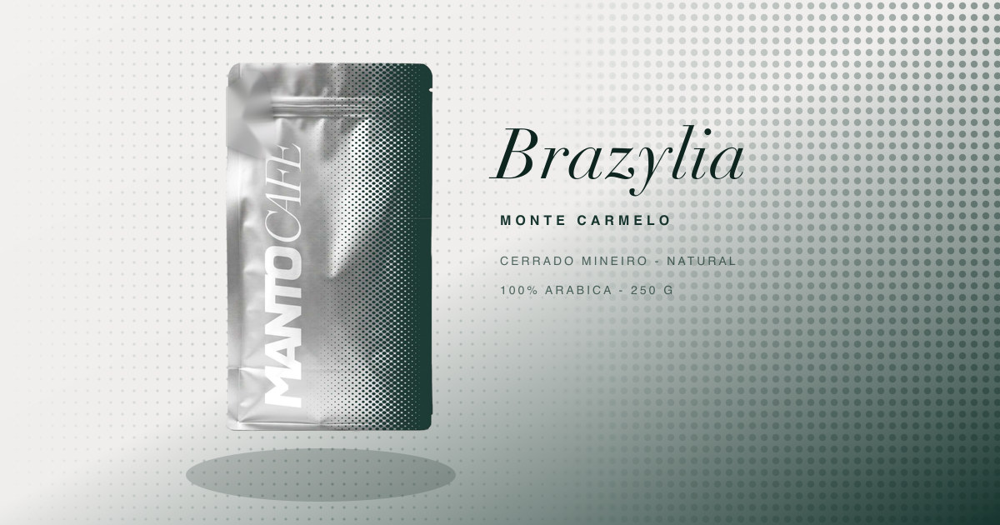
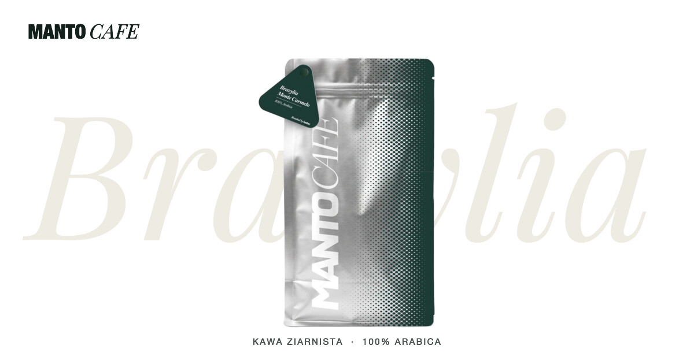
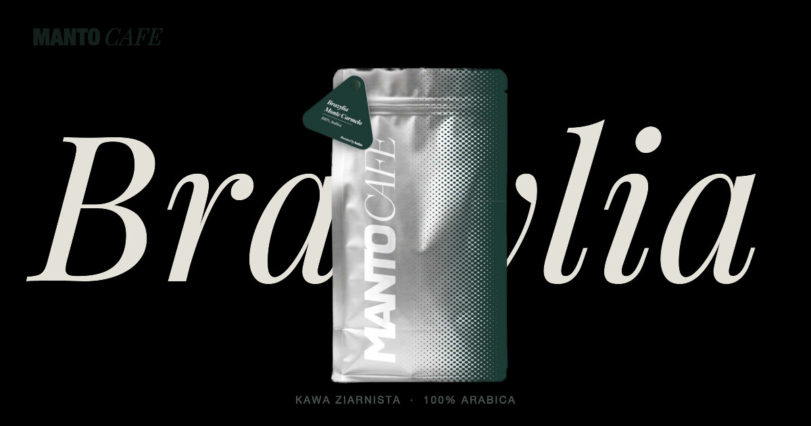
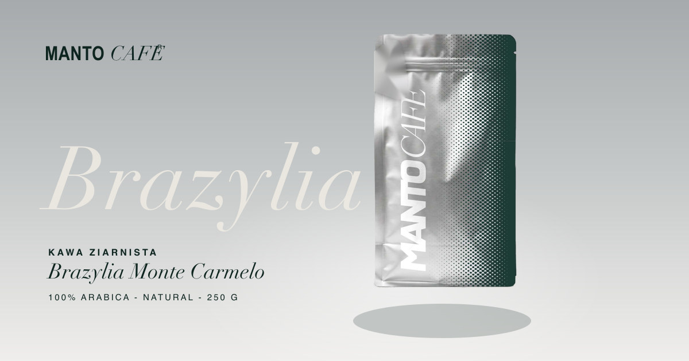
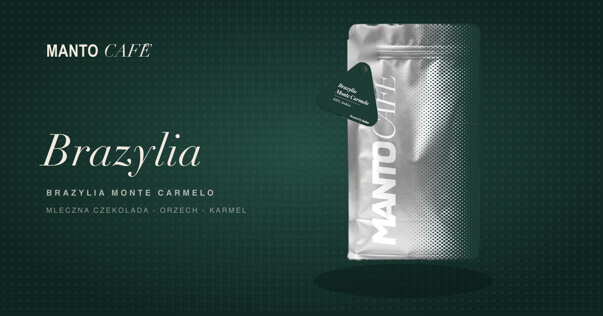
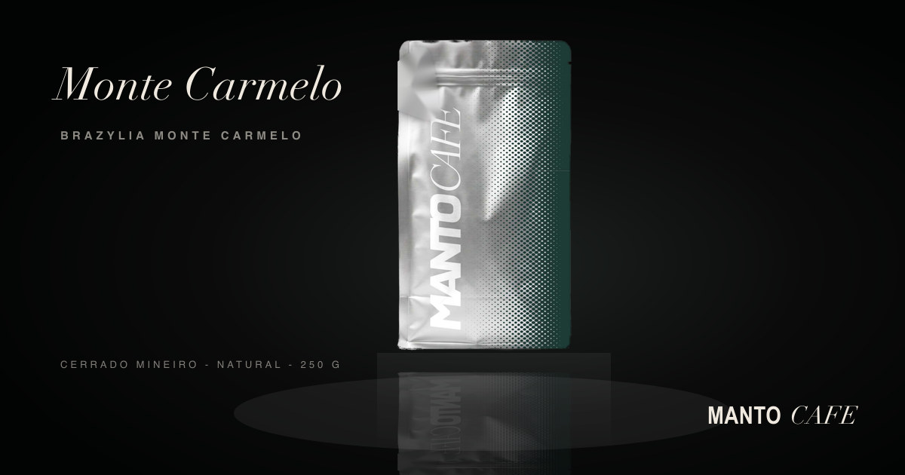
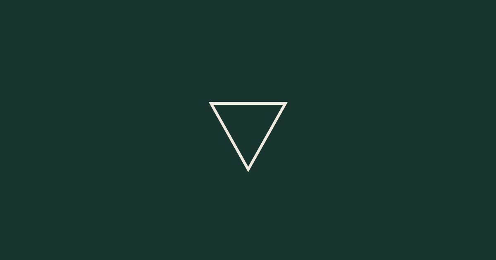

Ten obrazek pokazuje się, gdy ktoś wysyła link do sklepu (Messenger/IG/iMessage/LinkedIn). Miniatura obok każdego pokazuje, jak czyta się w małej skali. Wybieramy jeden.

Prawdziwa torebka, rastrowe przejście z opakowania, pełna hierarchia typograficzna. Faworyt nocnej rundy.

Studyjny gradient, wielkie „Brazylia" za torebką — najbliżej hero strony.

Rejestr nocny — czarny grunt, krem. Najbardziej dramatyczny; szczęśliwy wypadek renderera, zachowany celowo.

Czysty studyjny grunt, typografia lewa/dół.

Wariant kompozycji GPT.

Wariant kompozycji GPT.

Znak zastępczy z uruchomienia scaffoldu — do zastąpienia.